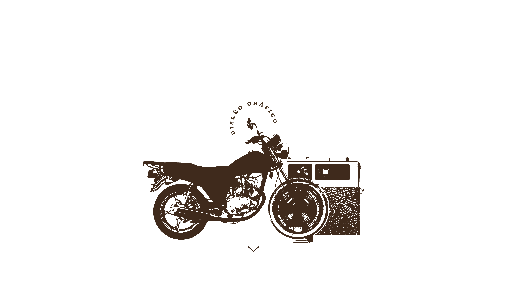
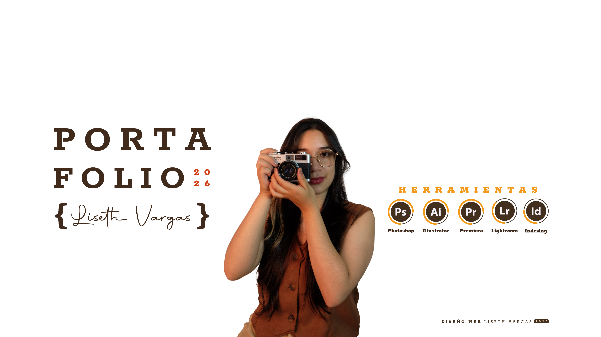

Como Alquimista visual, transformo conceptos abstractos como el Barrio donde crecí, mi amor por el café o la idea de libertad que siento cuando voy en mi moto escuchando una buena canción, en un sistema de texturas, colores y formas que generan algo en aquellos ojos que tienen la intención de ver.